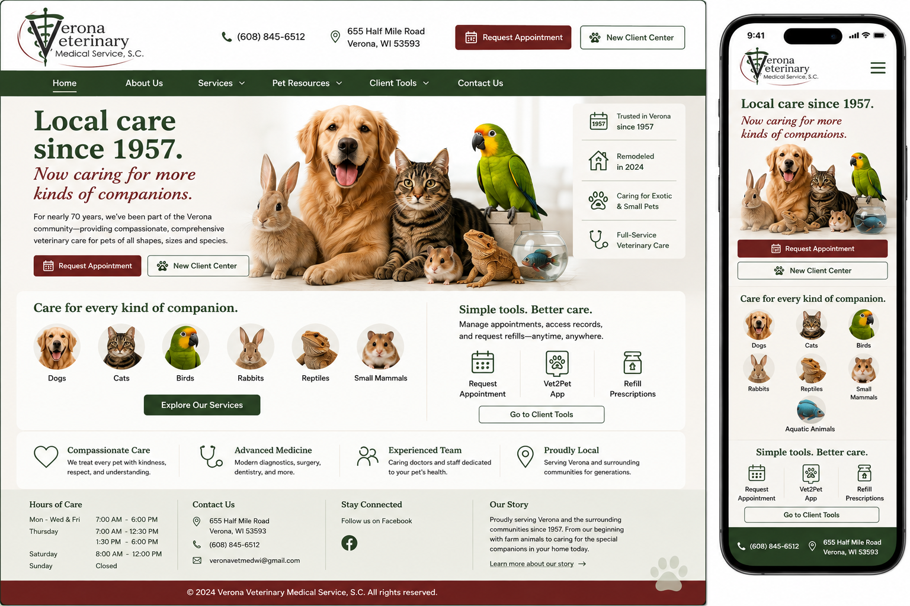

What I noticed
A trusted local practice has more to communicate than a list of services. Its history, range of care and relationship with the community should be visible immediately.
CONCEPT 01 · VETERINARY / ANIMAL CARE
The starting point was not simply how to make a veterinary website look newer. The question was how quickly a pet parent could understand the practice, see the animals and services it supports and know what to do next.
Verona Veterinary Medical Service already has something valuable: a long-standing local identity and a broad approach to companion-animal care. The opportunity was to make that experience easier to understand at a glance while preserving the familiarity and trust of the practice.
The concept therefore focuses on clear service discovery, prominent appointment actions, useful client tools and a responsive experience that carries the same priorities from desktop to mobile.
A trusted local practice has more to communicate than a list of services. Its history, range of care and relationship with the community should be visible immediately.
Help pet owners quickly identify relevant care while bringing high-value actions such as appointments and client tools closer to the beginning of the experience.
Preserve the practice's established identity while creating clearer service paths, stronger hierarchy and a more useful mobile experience.
THE VISUAL DIRECTION
Rather than replacing the character of an established local practice, this direction organizes that identity around the things pet owners need most: understanding available care, finding useful client tools and reaching the next action quickly.

DISCOVERY
The experience gives pet owners direct visual routes into services and the types of companion animals the practice supports instead of making them search for basic information.
TRUST
The local-care message, established history and breadth of veterinary services become visible parts of the first impression rather than details buried deeper in the site.
UTILITY
Appointment requests, new-client access and client tools are treated as core parts of the experience so common tasks require fewer steps on both desktop and mobile.